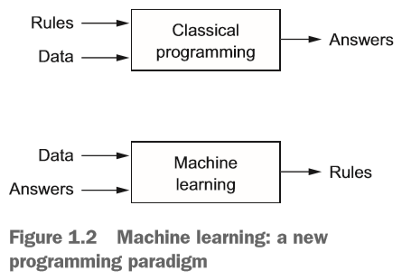
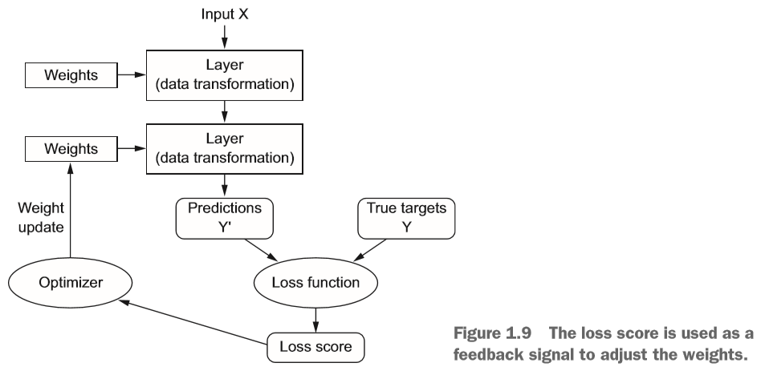

Week01: An Introduction to Machine Learning, Matrices and R Installation
1 Lecture01: An Introduction to Machine Learning
Course and textbook objective: Democratizing machine learning with commonly accessible soft- and hardware to regain control over our destiny rather than letting robots or artificial intelligence (AI) agents rule us.
The job of robots and AI agents should support us by making our life easier.
However, we are running the risk of becoming too dependent on, monitored or manipulated by algorithms.
Examples:
Finding our way around a new city. Just 2 decades ago we would study a road map in advance of our trip and memorize key turning points. On our way we would make extensive use of guiding landmarks and road signs. Furthermore, we have a broad overview of the area that we traverse, rather than a point-to-point conception of space. This would train our hippocampus, which houses the brain’s function of spatial orientation. This training is lost with our blind reliance of GPS navigation.
Self-driving vehicles. The objective is to reduce accidents and minimize congestion relative to human abilities. We are not there (yet).
Use AI to answer singular questions and assignments, rather than learning and memorizing the information. If we don’t learn the material, then our brain will never be given to connect bits of information together to generate knowledge and synthesize the knowledge into innovations.
2 Useful Websites
- <www.statlearning.com>
- https://cran.r-project.org/web/views/MachineLearning.html
- <www.kaggle.com>
3 R-Installation
It is important that we all work with the same version of R to guarantee that the assigned labs are working properly.
Please see RStudioTutorial2024.pptx to get a common foundation.
Here is an example on how to use GitHub’s Copilot in RStudio to code tasks. Note we frequently observe than AI is generating a substantial amount of unnecessary code and cannot address specialized tasks that have not previously been trained.
4 A Critical Reflection on Large Language Models
The latest advances in artificial intelligence are the Large Language Models with the capabilities to generate data. This however is just based on randomization and merger of previously trained
See the GPT-4.o video.
Key question: how will this influence our future?
5 Quiz Procedure and Entry Questionnaire
Please return the entry questionnaire by the end of this meeting. It will me tailor this course to your specific needs.
Please use our course’s ELEARNING site to practice the ungraded Quiz00.
6 Historical Background
- AI objective: Perform predictions of target outcomes \(y\) or future actions by using specific AI rules (i.e., functions \(f(x)\)) based on observable feature information \(x\).

6.1 Artificial Intelligence
In the 1950 computer pioneers start asking the question “Can computers think?”.
Ultimately its definition was reduced to automating intellectual tasks normally performed by humans.
The tasks were hardcoded as “rules” and lead to symbolic AI and expert systems in the 1980.
AI can solve well-defined logical problems, but it cannot handle complex and fuzzy problems.

6.2 Machine Learning (ML)
The objective of machine learning is to develop computer algorithms that transform data into intelligent actions.
ML started in the 1990s asking the question “can a computer discover hidden rules by processing data?”
In supervised ML humans input data and answers, subsequently the computer finds rules connecting data with answers (target variable).
- The target variable can be metric (value prediction) or categorical (class prediction)
This is achieved by training the “machine” with the available features and their associated outcome.
Once rules are established with some confidence, they can be used to perform predictions of answers based on new input features.
In unsupervised ML an algorithm searches for a structure (i.e., a signal or pattern) in the data to establish homogeneous groups of observations.
The identified groups are expected to be as distinct (heterogeneous) as possible from each other.
This allows, for instance, [a] to generalize the characteristics of individual observations by their associated group attributes, or [b] find uniquely outlying observations that don’t match up with any of the identified groups.
ML learning algorithms become progressively less structured, allowing us to model more and more complex patterns in the data. This loss of structure hinders interpretation of the models and diminishes the ability to generalize the models to independent data sources.
In general, ML is tightly related to statistics but is applied on large and complex data sets for which standard parametric statistical models become too rigid.
Progress in ML is mainly driven by statisticians and computer scientists as well as advancing technology and automated data collection.
The different backgrounds of statisticians and computer science can lead to inconsistencies and rediscovery of procedures and problems, which already have been address in the other discipline.
ML is applied on big data which are characterized by [a] volume, [b] velocity, [c] variety (heterogeneity) and [d] veracity (that is, certainty or the lack thereof).
Big unbiased data are usually needed to learn patterns in highly complex functional relationships among the features.
Criticism of ML:
- It is data driven and ideas are “proven” empirically rather than being rooted in a logical organized deductive theoretical system.
- There is always the risk to overfit the functional relationship so it just becomes training sample specific rather than being able to generalized to new external data.
6.3 Types of Models
6.3.1 Descriptive Models
Aims at describing the data and finding underlying patterns in observed data.
The employed method of describing the data already acts as filter by letting specific characteristics of the data pass through whereas other characteristics of the data are ignored. We need to understand the properties of these filters.
Examples: Loess smoother in a scatterplot.
6.3.2 Inferential Model
Evaluates theories, hypotheses and assumptions based on a set of given sample data and statistical models.
That is, inferential models start with a conjecture about the underlying data generating process.
Deeply rooted in probability theory to capture the inherent randomness in the sample data.
Allows data analyses in the Bayesian domain in which the conjectures have a prior distribution, the observed sample data follows a likelihood model, and the resulting model parameters have a posterior distribution.
6.3.3 Predictive Models
The objective of predictive models is to provide the most accurate prediction of an outcome based on independent features.
The simplest form of predictive methods is the multiple linear regression:
The underlying data generating processes is assumed to have the form \[Y = \beta_0 + \beta_1 \cdot X_1 + \cdots + \beta_K \cdot X_K + \varepsilon\]
The estimated prediction for the \(i^{th}\) observation in the \(K + 1\) estimated parameters \(\beta_k\) becomes \[\hat{y}_i = b_0 + b_1 \cdot x_{i1} + \cdots + b_K \cdot x_{iK}\]
The predictive model is trained on sample data in the hope that the model generalizes well to independent objects described by their features. Therefore, the model is evaluated based on test data.
Caveat: if there is no signal in the data not even the most sophisticated model will lead to meaningful predictions.
A predictive model can always be designed in a way that its prediction on training data is perfect but leads to a disastrous prediction for independent test data.
Thus, a perfect balance must be found between the model bias and the error variance of the predictive model structure. This leads for predictive models to:
Evaluating different statistics describing the model fit.
Properly transforming the data to become adequate for the underlying model structure by feature engineering (see EPPS6323).
This may require tuning hyper-parameters, perhaps by resampling techniques and cross-validation.
Reducing the dimensionality (i.e., complexity) of the model to eliminate irrelevant features using regularization techniques.
The machine learning approaches of tree-based models and support vector machines are historically key techniques, but their performance is now surpassed by neural networks. Nevertheless, the simplicity and lower data requirements of simpler models is still a main advantage.
Complex models are mainly black boxes, and their interpretation becomes virtually impossible.
Training predictive models is usually an iterative process.
6.3.4 Example of a Predictive Model: Deep Learning
Deep Learning (DL) is a specialized subfield of predictive modelling based neural networks. Small computational neural networks emerged in the early 1960ies. They were able to handle only a small set of hidden layers and thus provided a coarse approximation of the underlying data structure.
Deep learning is based on very simple data processing units. A sheer multitude of the units are pooled together into layers which are stringed together in a non-linear manner.
The objective is to find an increasingly more accurate functional representations of the outcome \(y\).
With the increase in affordable computing power, development of numerical robust algorithms and an increasing availability of large data, DL with many hidden layers became prominent in the early 2010.
“Deep” does not refer to a deeper understanding of the task.
DL is based on the mathematical framework of neural networks but does not have any relationship to neurobiology (i.e., neurobiology studies how our brains work).
One can think of neural networks as a series of non-linear filters (the layers) that distill the input information which is measured by the features \(X\) into a “purified version” that is closely related to the prescribed output \(y\).
Building blocks of understanding neural networks are “logistic regression” and gradient descent optimizers.
A sequence of layers weight feature input vectors \(\mathbf{x}_i\) that will generate an output label \(y_i\): \[y_i = f_{NN}(\mathbf{x}_i) = f_3(f_2(f_1(\mathbf{x}_i)))\]
DL involves more than two hidden layers. In \(y_i = f_{NN}(\mathbf{x}_i) = f_3(f_2(f_1(\mathbf{x}_i)))\) the function \(f_3\) is the final output layer.

- The objective of specifying the \(l\)-th layer functions \(f_l()\) is to minimize the prediction error, which is measured by a loss score functions.
6.4 Criticism
Black box approach: The focus of machine learning is to perform accurate predictions rather than to provide meaningful explanations and insights into the underlying structure within data (e.g., tests of regression models in econometrics)
Machine learning cannot ask relevant questions. Thus, an analyst is needed to train the machine with relevant data.
Machine learning algorithms are always biased towards an inherent structure of the input training data (recall earlier filter argument).
Machine learning needs to find a balance of distinguishing noise from relevant structures to avoid overfitting the model to the just the training data.
6.5 Steps of Machine Learning Process
Collecting data
Exploring and preparing data. Feature and target engineering.
Training an appropriate model to the data (or set of models and average their predictions)
Evaluation of the model’s performance
Improving model performance